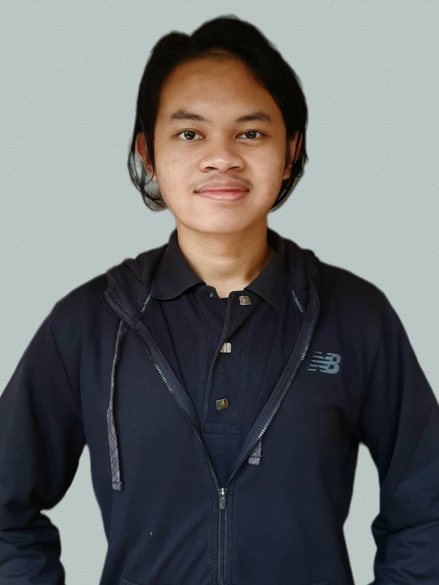

Hi, my name is Naufaliando Yudo Kusumo. My friends usually call me Nando. I was born in Balikpapan, 23rd of June 2001.
Currently I'm studying in Sepuluh Nopember Institute of Technology Surabaya, major of Informatics.
My hobby is exploring new places that I have never been into. I often kill my leisure time by watching youtube videos or listening to music
My dream is to make Indonesian people prosperous and make Indonesia as a developed country. My goal in life is pretty simple, I want to make people around me happy. ^_^